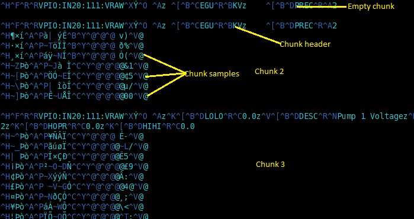

The
PlainStoragePlugin
in the EPICS archiver appliance uses Google's
ProtocolBuffers
as the serialization mechanism. The PB definitions mapping EPICS DBR
types to PB messages can be found in
EPICSEvent.proto. PB files contain
serialized PB messages; one per sample; a sample per line. The first
line in a PB file is a header (PayloadInfo PB message)
that contains some basic information like the PV name, its DBR type
and so on.
As serialized PB messages are binary data; after serialization,
newline characters are escaped to maintain a "sample per line"
constraint.
The ASCII escape character 0x1B is escaped to the
following two characters 0x1B 0x01
The ASCII newline character \n or
0x0A is escaped to the following two characters
0x1B 0x02
The ASCII carriage return character 0x0D is escaped
to the following two characters 0x1B 0x03
Because of the sample per line constraint, one can use
wc -l to determine the number of events in a PB file.
The "sample per line" constraint also lets us determine where a sample
begins and ends at any arbitrary location in the file.
PB files try to optimize on storage consumption. On an average, an
EPICS DBR_DOUBLE/PB ScalarDouble consumes about 21 bytes
per sample. To save space, the record processing timestamps in the
samples are split into three parts
year - This is stored once in the PB file in the header.
secondsintoyear - This is stored with each sample.
nano - This is stored with each sample.
This leads to the side-effect that each PB file "belongs" to a year.
In addition, the record processing timestamps are guaranteed to be and
expected to be monotonically increasing. The "monotonically increasing
timestamps" constraint lets us use various search algorithms on PB
files without the need for an index. The
PlainStoragePlugin
handles the translation back and forth between DBR types and raw PB
messages and also enforces a strict partitioning.
The installation bundle also includes some utilities that manipulate
PB files. These can be found in the
install/pbutils folder of the mgmt webapp.
These include
printTimes.sh - This utility prints the record processing
timestamps of all the samples in the set of specified PB files.
pb2json.sh - This utility prints all the data in all the
samples in the set of specified PB files as JSON that can
potentially be loaded into Python or other languages.
validate.sh - This utility performs some simple validation
of the set of specified PB files or PB files in the specified
folders.
repair.sh - This utility performs some simple validation of
the set of specified PB files or PB files in the specified
folders. If errors are found in a PB file, the PB file is repaired
by copying the valid samples into a new file and then renaming it
to the old file name. It also support an option to make a backup
of the original file before attepmting to fix it.
The PB/HTTP protocol
The PB/HTTP is a binary protocol over HTTP that is an
extension of the .pb file format. The main difference is
that PB files contain only one chunk (header+samples) while the PB/HTTP
can contain many chunks. Chunks are separated by empty lines (\n
characters) similar to how HTTP separates its headers from the body.
While streaming data over the PB/HTTP protocol, the server also uses
HTTP chunks
to transfer the data across. There is no strict formula on how many
chunks there will per data retrieval request; the server chunks data
based on data source/partition/other parameters. Both
pbrawclient
and
carchivetools
handle the multiple chunks in a seamless fashion and present the data to
the caller as a single event stream.
